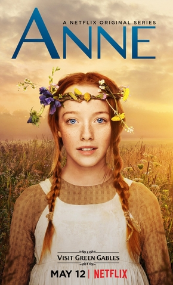

Depois de treze anos sofrendo no sistema de assistência social, a orfã Anne é mandada para morar com uma solteirona e seu irmão. Munida de sua imaginação e de seu intelecto, a pequena Anne vai transformar a vida de sua família adotiva e da cidade que lhe abrigou, lutando pela sua aceitação e pelo seu lugar no mundo.
A história aborda vários temas atuais, mesmo se passando no fim do século XIX, tais como, a homofobia, o bullying, a adoção tardia e a definição de família, o machismo e o feminismo, o assédio, a auto-aceitação e amor próprio, a menstruação, o racismo e a escravidão da época, a xenofobia e o extermínio dos índios.
Conheça o elenco